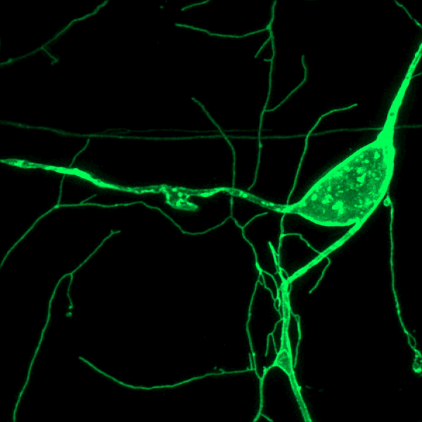

Stanford University, School of Medicine
2024 – present
Medical Scientist Training Program (MSTP)
(link)
Pursuing: MD-PhD
University of Pennsylvania
2020 – 2024
Vagelos Molecular Life Sciences Scholar
(link)
BA, Biochemistry (with Distinction)

My goal in life is to be a great neurosurgeon. My understanding of what it means to be a "great" physician changes frequently, and so far I have identified three pillars. [1] A great physician is great at medicine and or surgery. [2] A great physician advances their field through research. [3] A great physician is a great mentor, and helps teach the next generation of great physicians.Please feel free to reach out to me with questions or ideas for collaboration. It would be a pleasure to hear from you.